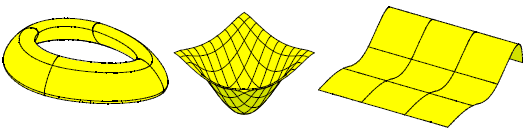
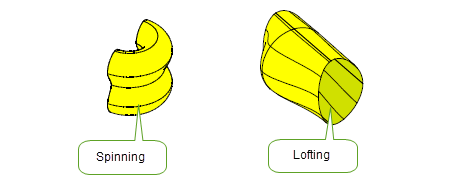

| |
B-Spline Curves and Surfaces |
| <<< Working with Sheets and Wires | Chapters | Convergent Modeling >>> |
Wherever possible, Parasolid uses analytic geometry in its models. For example, curves such as circles, ellipses and lines, and surfaces such as spheres, tori and cones are represented using geometry that can be described by an equation. Using analytic geometry as much as possible gives Parasolid unparalleled speed and economy of storage.
There are times, however, when geometry cannot be represented by analytic entities. If possible, other types of geometry are used (such as swept or spun surfaces), but when even this is not possible, NURBs-based ( Non- Uniform Rational B- splines) B-geometry is used instead. Parasolid offers two forms of B-geometry: B-curves and B-surfaces. Unlike analytic geometry, B-geometry is defined over a finite region of space.
B-curves and B-surfaces are fully integrated into Parasolid, so you can attach them to edges and faces, and apply any relevant Parasolid operation to them, just as you would any other type of curve or surface. This integration is so tight that in most circumstances there is no reason why users even need be aware they are using B-geometry. However, in addition, Parasolid provides functionality to let you work explicitly with B-geometry. This chapter describes the functionality that is available.
Figure 7-1 Examples of B-surfaces
Parasolid’s use of B-geometry is kept to a minimum; wherever possible, other types of geometry are used during operations that create geometry. However, if you explicitly need to create B-geometry, Parasolid provides the following methods:
While performing modelling operations, Parasolid treats B-geometry just like any other type of geometry, allowing you to apply relevant operations to models that have attached B-curves and B-surfaces. In addition, Parasolid offers a range of modelling functionality that is intended specifically for use with B-geometry.
Figure 7-2 modelling with B-geometry
Some of the modelling operations that can be performed with B-geometry are as follows:
|
Parasolid can create B-surfaces by sweeping or spinning a previously created B-curve. |
|
|
Parasolid can create B-surfaces by lofting between a set of pre-defined B-curves. Parasolid’s generic lofting functionality is described in more detail in Chapter 9, “Building Bodies from Profiles”. Parasolid contains a variety of options to control the shape of the lofted surface. |
|
|
Parasolid can create B-curves along constant parameter lines from a B-surface. |
|
|
Parasolid can join a number of B-curves to form a single B-curve. |
Parasolid allows you to simplify the geometry in a body by converting rational B-curves and B-surfaces to non-rational B-curves and B-surfaces. You can also convert non-rational B-curves to lines or circles, and non-rational B-surfaces to planes, cylinders, cones, spheres or tori.
| <<< Working with Sheets and Wires | Chapters | Convergent Modeling >>> |